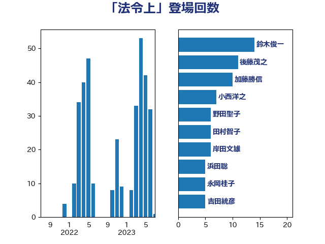

単語「法令上」

| 鈴木俊一 | 自由民主党 | 14 回 |
| 後藤茂之 | 自由民主党 | 11 回 |
| 加藤勝信 | 自由民主党 | 10 回 |
| 小西洋之 | 立憲民主党 | 7 回 |
| 野田聖子 | 自由民主党 | 6 回 |
| 田村智子 | 日本共産党 | 6 回 |
| 岸田文雄 | 自由民主党 | 6 回 |
| 浜田聡 | NHK党 | 5 回 |
| 永岡桂子 | 自由民主党 | 5 回 |
| 吉田統彦 | 立憲民主党 | 5 回 |
| 伊佐進一 | 公明党 | 5 回 |
| 階猛 | 立憲民主党 | 4 回 |
| 齋藤健 | 自由民主党 | 3 回 |
| 逢坂誠二 | 立憲民主党 | 3 回 |
| 西村康稔 | 自由民主党 | 3 回 |
| 緒方林太郎 | 無所属 | 3 回 |
| 松本剛明 | 自由民主党 | 3 回 |
| 斉藤鉄夫 | 公明党 | 3 回 |
| 岡本三成 | 公明党 | 3 回 |
| 中谷真一 | 自由民主党 | 3 回 |
| 高良鉄美 | 無所属 | 2 回 |
| 馬淵澄夫 | 立憲民主党 | 2 回 |
| 阿部司 | 日本維新の会 | 2 回 |
| 萩生田光一 | 自由民主党 | 2 回 |
| 緑川貴士 | 立憲民主党 | 2 回 |
| 米山隆一 | 立憲民主党 | 2 回 |
| 湯原俊二 | 立憲民主党 | 2 回 |
| 柴田巧 | 日本維新の会 | 2 回 |
| 杉尾秀哉 | 立憲民主党 | 2 回 |
| 末松信介 | 自由民主党 | 2 回 |
| 新藤義孝 | 自由民主党 | 2 回 |
| 打越さく良 | 立憲民主党 | 2 回 |
| 岩谷良平 | 日本維新の会 | 2 回 |
| 山崎正恭 | 公明党 | 2 回 |
| 小沼巧 | 立憲民主党 | 2 回 |
| 塩川鉄也 | 日本共産党 | 2 回 |
| 吉川沙織 | 立憲民主党 | 2 回 |
| 古川禎久 | 自由民主党 | 2 回 |
| 友納理緒 | 自由民主党 | 2 回 |
| 佐藤信秋 | 自由民主党 | 2 回 |
| 鰐淵洋子 | 公明党 | 1 回 |
| 高橋千鶴子 | 日本共産党 | 1 回 |
| 門山宏哲 | 自由民主党 | 1 回 |
| 長妻昭 | 立憲民主党 | 1 回 |
| 鈴木英敬 | 自由民主党 | 1 回 |
| 金子恭之 | 自由民主党 | 1 回 |
| 野村哲郎 | 自由民主党 | 1 回 |
| 重徳和彦 | 立憲民主党 | 1 回 |
| 足立康史 | 日本維新の会 | 1 回 |
| 赤池誠章 | 自由民主党 | 1 回 |
| 赤木正幸 | 日本維新の会 | 1 回 |
| 豊田俊郎 | 自由民主党 | 1 回 |
| 西村明宏 | 自由民主党 | 1 回 |
| 西岡秀子 | 国民民主党 | 1 回 |
| 羽田次郎 | 立憲民主党 | 1 回 |
| 笠井亮 | 日本共産党 | 1 回 |
| 穂坂泰 | 自由民主党 | 1 回 |
| 秋葉賢也 | 自由民主党 | 1 回 |
| 福島伸享 | 無所属 | 1 回 |
| 田村まみ | 国民民主党 | 1 回 |
| 牧島かれん | 自由民主党 | 1 回 |
| 浮島智子 | 公明党 | 1 回 |
| 浜田靖一 | 自由民主党 | 1 回 |
| 河野太郎 | 自由民主党 | 1 回 |
| 水野素子 | 立憲民主党 | 1 回 |
| 森屋隆 | 立憲民主党 | 1 回 |
| 林芳正 | 自由民主党 | 1 回 |
| 本庄知史 | 立憲民主党 | 1 回 |
| 早稲田ゆき | 立憲民主党 | 1 回 |
| 新妻秀規 | 公明党 | 1 回 |
| 斎藤嘉隆 | 立憲民主党 | 1 回 |
| 川田龍平 | 立憲民主党 | 1 回 |
| 岬麻紀 | 日本維新の会 | 1 回 |
| 山谷えり子 | 自由民主党 | 1 回 |
| 山田勝彦 | 立憲民主党 | 1 回 |
| 山添拓 | 日本共産党 | 1 回 |
| 山本香苗 | 公明党 | 1 回 |
| 山岸一生 | 立憲民主党 | 1 回 |
| 小田原潔 | 自由民主党 | 1 回 |
| 小沢雅仁 | 立憲民主党 | 1 回 |
| 宗清皇一 | 自由民主党 | 1 回 |
| 奥下剛光 | 日本維新の会 | 1 回 |
| 大石あきこ | れいわ新選組 | 1 回 |
| 大口善徳 | 公明党 | 1 回 |
| 塚田一郎 | 自由民主党 | 1 回 |
| 吉田久美子 | 公明党 | 1 回 |
| 伊藤孝恵 | 国民民主党 | 1 回 |
| 三浦信祐 | 公明党 | 1 回 |
| あかま二郎 | 自由民主党 | 1 回 |